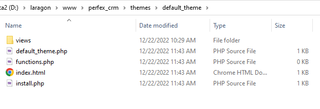

Created: 15/12/2022
By: Perfexcloud
Email: support@perfexcloud.com
Thank you for purchasing my module. If you have any questions that are beyond the scope of this help file, please feel free to email via my user page contact form here. Thanks so much!
• Perfex CRM version 2.3.x +
• PHP 7.4.*
• MySQL 5.1+
Login to Perfex as an Admin and go to SETUP>>MODULE.
And upload the .ZIP file downloaded from codecanyon and click Install After the module has been successfully installed, click on Activate to activate the module
Go to SETUP>>THEMES in menu
Just like in Modules setup, you can Upload new theme supported by Perfex Themes Manager and Active/Deactive what theme you want. One theme can active each time.
When install the Perfex Themes Manager module, a blank theme auto created with name "Default theme" and in root folder "./themes/default_theme", with copied views folder of the instance "application" folder, you can start modify the views in themes/default_theme/views like you want.
So, easy for creat your own theme, just duplicate "Default theme" theme folder in "./themes", then modify it, you can change layout html, assets like css/js and put your own code.
Simple structure of a theme support by Perfex Themes Manager, something like that:
theme_slug/
- views/ ==> views folder with custom and modify views code
- theme_slug.php ==> define theme infomation
- functions.php ==> some custom functions
- install.php ==> install script
*Notes: theme_slug.php must have define:
/*
Theme Name:
Description:
Version:
Author:
Author URI:
Requires at least: 2.3.*
*/
If you don't own a license for Perfex Themes Manager, you can purchase it, here
This theme or plugin is comprised of two parts. (1) the PHP code and integrated HTML are licensed under the General Public License (GPL). You will find a copy of the GPL in the same directory as this text file. (2) All other parts, but not limited to the CSS code, images, and design are licensed according to the terms of your purchased license. Read more about licensing here: http://themeforest.net/licenses
Once again, thank you so much for purchasing this module. As I said at the beginning, I'd be glad to help you if you have any questions relating to this module. No guarantees, but I'll do my best to assist. If you have a more general question relating to the modules on ThemeForest, you might consider visiting the forums and asking your question in the "Item Discussion" section.
Perfexcloud